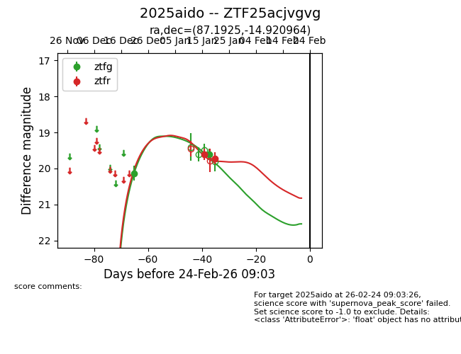
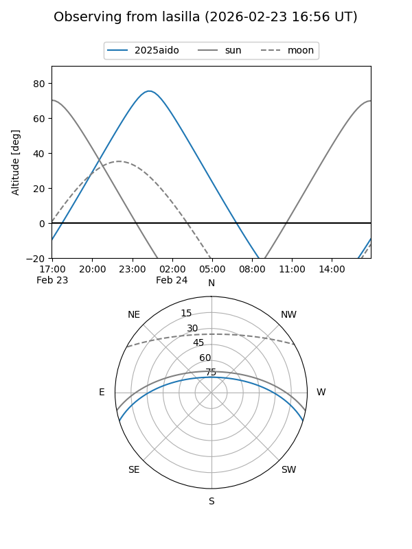
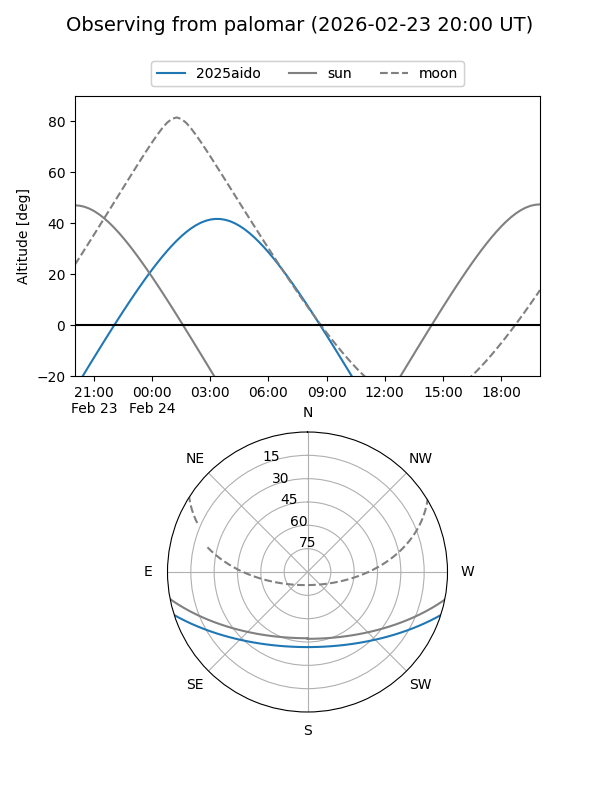
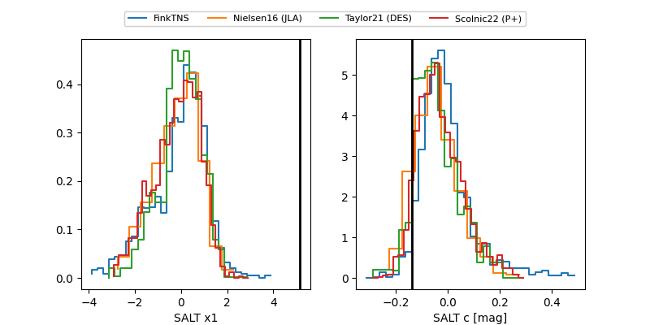

2025aido
Target 2025aido at 2026-01-27 09:41
Aliases and brokers:
FINK: link
Lasair: link
ALeRCE: link
TNS: link
YSE: link
alt names
ZTF25acjvgvg (ztf,fink_ztf)
2025aido (tns,yse)
Coordinates:
equatorial (ra, dec) = 87.1925,-14.92096
equatorial (HMS+DMS) = 05:48:46.19,-14:55:15.47
galactic (l, b) = (219.6854,-20.46553)
Flags:
Photometry:
last ztfg=19.61, ztfr=19.72
2 ztfg, 2 ztfr detections
Lightcurve

Visibility


Additional plots
